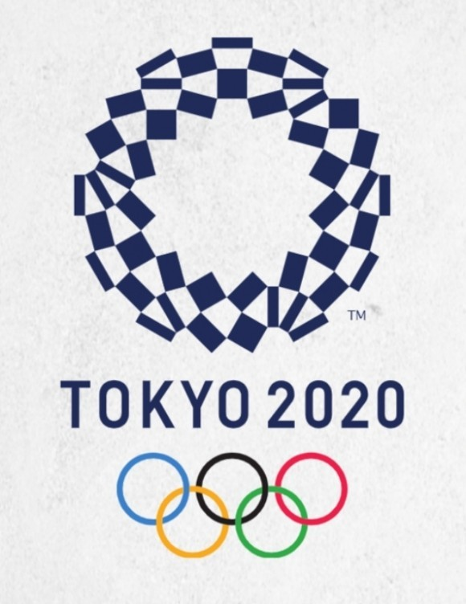

도쿄 올림픽은 2021년 7월 23일부터 8월 8일까지 일본 도쿄에서 개최될 예정일 하계 올림픽이다.
본래 2020년 여름에 개최될 예정이었으나 코로나바이러스-19의 세계적인 확산으로 인해 개최가 2021년 여름으로 연기되었다.
다만 대회 명칭은 그대로 유지된다. 올림픽의 개최 시기가 1년 연기되는 것은 근대의 하계올림픽 역사상 처음 있는 일이다.
이번 도쿄 올림픽에서는 3인제 농구, 프리스타일 BMX, 기타 혼성 종목을 비롯해 여러 종목이 신설 추가될 예정이다.
또한 2008년 올림픽 이후 올림픽 종목에서 빠졌던 야구와 소프트볼도 이번 올림픽 종목에 포함되게 되었다.
도쿄 올림픽의 경기 종목으로는 펜싱, 하키, 태권도, 양궁 등 33개의 종목으로 진행된다.
07/22~23 - 사전경기 : 소프트볼, 남녀 축구
07/24 - 개막식, 양궁 랭킹 라운드, 조정 예선
07/25 - 수영, 양궁, 수구 외 20종목 진행
07/26 - 양궁, 배드민턴, 농구 외 27종목 진행